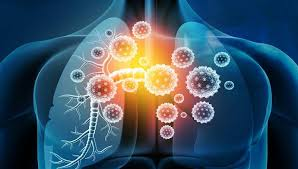
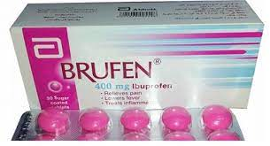
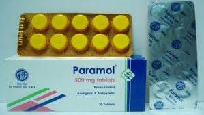
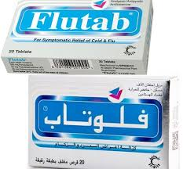
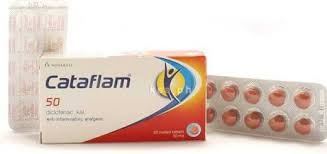
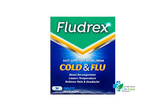

اقوي عشر ادويه
معلومات جانبيه عن الادويه

!!!معلومه هامه هناك اعراض جانبيه لهذه العلاجات مثل الم البطن والاغماء
!!!معلومه هامه هناك اعراض جانبيه لهذه العلاجات مثل الم البطن والاغماء
!!!معلومه هامه هناك اعراض جانبيه لهذه العلاجات مثل الم البطن والاغماء
!!!معلومه هامه هناك اعراض جانبيه لهذه العلاجات مثل الم البطن والاغماء
!!!معلومه هامه هناك اعراض جانبيه لهذه العلاجات مثل الم البطن والاغماء
!!!معلومه هامه هناك اعراض جانبيه لهذه العلاجات مثل الم البطن والاغماء
!!!معلومه هامه هناك اعراض جانبيه لهذه العلاجات مثل الم البطن والاغماء
!!!معلومه هامه هناك اعراض جانبيه لهذه العلاجات مثل الم البطن والاغماء
!!!معلومه هامه هناك اعراض جانبيه لهذه العلاجات مثل الم البطن والاغماء
!!!معلومه هامه هناك اعراض جانبيه لهذه العلاجات مثل الم البطن والاغماء
!!!معلومه هامه هناك اعراض جانبيه لهذه العلاجات مثل الم البطن والاغماء
!!!معلومه هامه هناك اعراض جانبيه لهذه العلاجات مثل الم البطن والاغماء


العلامات والأعراض
عادة ما تظهر أعراض نزلات البرد بعد يوم إلى ثلاثة أيام من التعرض لفيروس يسبب البرد. قد تشمل العلامات والأعراض التي قد تختلف من شخص لآخر ما يلي: انسداد أو احتقان الأنف التهاب الحلق السعال الاحتقان أوجاعًا خفيفة بالجسم أو صداعًا خفيفًا العطاس حمى خفيفة شعور عام بالاعتلال قد يبدأ الإفراز من أنفك شفافًا، ثم يصبح أكثر سمكًا أو أصفر أو أخضر اللون عند الإصابة بنزلات البرد الشائعة. وهذا لا يعني في العادة إصابتك بعدوى بكتيرية.
هل تعاني من نزلات برد؟
 ان كنت تعاني من نزلات برد سوف نقدم اليوم اقوي 10 ادويه بدون ترتيب ضد نزلات البرد وقد جئنا بهذه المعلومات من هذه المواقع skynewsarabia| mayoclinic|wikipedia
1-panadol cold+flu
2-brufen

3-power cold&flu
4-paramol

5-cold free
6-flutab

7-cataflam

8-congestal
9-tramadol
10-fludrex
